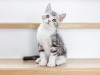
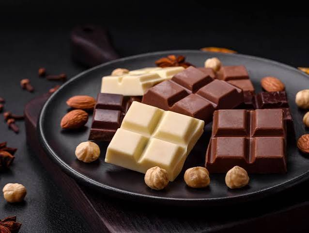

Gatos sempre caem de pé!
Gatos podem se machucar ao cair de grandes alturas.

Gatos sempre caem de pé!
Gatos podem se machucar ao cair de grandes alturas.
Café é ruim para a saúde!
O consumo moderado de café pode ter benefícios para a saúde.

Chocolate é ruim para os cães!

O chocolate contém teobromina, que é tóxica para os cães.
Ficar exposto ao sol é sempre saudável!
A exposição excessiva ao sol pode causar danos à pele e aumentar o risco de câncer.